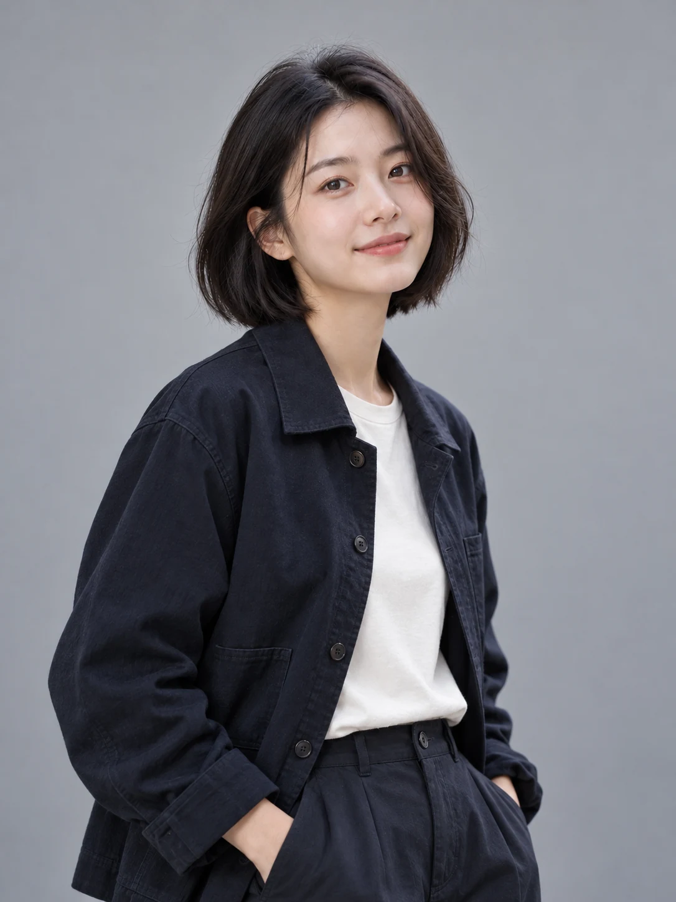

关于林予。


观察 · 编排 · 表达 向下认识我 ↓
01 / PROFILE
在文字与图像之间，
建立阅读的秩序。
这是林予的示例身份，用于展示视觉传达设计方向的个人网站。
作品围绕三个线索展开：书籍与海报的编排、地域文化的图形转译，以及角色和系列场景的视觉延展。
02 / PRACTICE
从四组作品，
认识我的创作。
TOOLS / 工具
创作工具
平面与插画
Photoshop
Illustrator · Procreate
三维与编程
Blender 基础建模
Processing 编程设计
交互与原型
墨刀原型搭建
UI 界面与流程探索